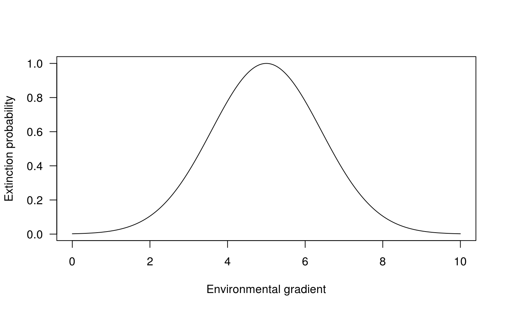
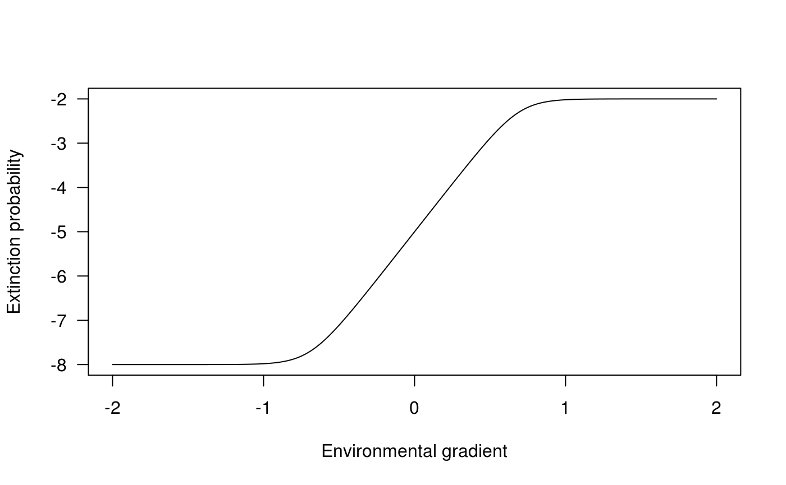

library(biogeonet)
In Cazelles1, we basically expand the classical Theory of Island Biogeography2 to include ecological interactions and a link to the environmental niche. To do so we:
To simulate I use the niche model that I implemented in nicheModel(). The first parameters, ``, determines the number of species:
nicheModel(nbsp = 5, .2, 1) #> [,1] [,2] [,3] [,4] [,5] #> [1,] 0.0000000 0.08423852 0.7664287 0.0000000 0.0000000 #> [2,] -0.1673350 -0.59183503 0.0000000 0.0000000 0.0000000 #> [3,] -0.4846214 0.00000000 0.0000000 0.0000000 0.0000000 #> [4,] 0.0000000 0.00000000 0.0000000 0.0000000 0.7389576 #> [5,] 0.0000000 0.00000000 0.0000000 -0.4723567 -0.9623593 nicheModel(nbsp = 10, .2, 1) #> [,1] [,2] [,3] [,4] [,5] [,6] #> [1,] 0.0000000 0.0000000 0.0000000 0.00000000 0.000000000 0.0000000 #> [2,] 0.0000000 0.0000000 0.0000000 0.00000000 0.000000000 0.0000000 #> [3,] 0.0000000 0.0000000 0.0000000 0.02290975 0.000000000 0.0000000 #> [4,] 0.0000000 0.0000000 -0.7154118 0.00000000 0.020137347 0.0000000 #> [5,] 0.0000000 0.0000000 0.0000000 -0.20158438 -0.285316206 -0.2173576 #> [6,] 0.0000000 0.0000000 0.0000000 0.00000000 0.006646735 0.0000000 #> [7,] -0.9921565 -0.3493675 -0.5588185 0.00000000 0.000000000 0.0000000 #> [8,] 0.0000000 0.0000000 0.0000000 0.00000000 0.000000000 0.0000000 #> [9,] 0.0000000 0.0000000 0.0000000 0.00000000 0.000000000 0.0000000 #> [10,] 0.0000000 0.0000000 0.0000000 0.00000000 0.000000000 0.0000000 #> [,7] [,8] [,9] [,10] #> [1,] 0.5200845 0.000000000 0 0.0000000 #> [2,] 0.1186515 0.000000000 0 0.0000000 #> [3,] 0.8768480 0.000000000 0 0.0000000 #> [4,] 0.0000000 0.000000000 0 0.0000000 #> [5,] 0.0000000 0.000000000 0 0.0000000 #> [6,] 0.0000000 0.000000000 0 0.0000000 #> [7,] 0.0000000 0.000000000 0 0.4796585 #> [8,] 0.0000000 -0.000819478 0 0.0000000 #> [9,] 0.0000000 0.000000000 0 0.0000000 #> [10,] -0.7841765 0.000000000 0 0.0000000
The second parameter controls the connectance (the expected connectance).
nicheModel(5, connec = .1, 1) #> [,1] [,2] [,3] [,4] [,5] #> [1,] 0 0.0000000 0.0000000 0.0000000 0.00000000 #> [2,] 0 -0.9624372 0.0000000 0.0000000 0.44972237 #> [3,] 0 0.0000000 0.0000000 0.0000000 0.37335227 #> [4,] 0 0.0000000 0.0000000 0.0000000 0.32351070 #> [5,] 0 -0.3008550 -0.9874299 -0.2493751 -0.01861432 nicheModel(5, connec = .4, 1) #> [,1] [,2] [,3] [,4] [,5] #> [1,] -0.08938488 0.15414453 0.0000000 0.6573219 0.3285603 #> [2,] -0.02648614 -0.52872205 0.8381524 -0.1923653 0.3987934 #> [3,] 0.00000000 -0.45138505 -0.9403534 -0.2618457 0.5103612 #> [4,] -0.71166805 0.01849329 0.9173436 0.0000000 0.4311981 #> [5,] -0.65256086 -0.38897821 -0.3942041 -0.7259063 -0.7912346
The last parameter, mode, affects the sign structure of the output matrix (not included in the original publication o fthe niche model):
# mode 1 + and -, refered as "predation" in Cazelles (2016) nicheModel(5, .2, mode = 1) #> [,1] [,2] [,3] [,4] [,5] #> [1,] -0.2196047 0.0717989 0.0000000 0.0000000 0.0000000 #> [2,] -0.8239885 0.0000000 0.0000000 0.1419593 0.0000000 #> [3,] 0.0000000 0.0000000 -0.4202297 0.6308275 0.2573932 #> [4,] 0.0000000 -0.6498952 -0.7762214 0.0000000 0.2155817 #> [5,] 0.0000000 0.0000000 -0.1042250 -0.2414534 -0.1375708 # mode 2, only -, refered as "competition" in Cazelles (2016) nicheModel(5, .2, mode = 2) #> [,1] [,2] [,3] [,4] [,5] #> [1,] 0 0.0000000 0.0000000 0.0000000 0.0000000 #> [2,] 0 -0.5983179 -0.5183450 0.0000000 -0.7476726 #> [3,] 0 -0.5660064 0.0000000 -0.6913341 0.0000000 #> [4,] 0 0.0000000 -0.5779856 -0.2777446 0.0000000 #> [5,] 0 -0.2365302 0.0000000 0.0000000 0.0000000 # mode 2, only +, refered as "mutualism" in Cazelles (2016) nicheModel(5, .2, mode = 3) #> [,1] [,2] [,3] [,4] [,5] #> [1,] 0.6247577 0.0000000 0.0000000 0.0000000 0.0000000 #> [2,] 0.0000000 0.0000000 0.0000000 0.0000000 0.6992318 #> [3,] 0.0000000 0.0000000 0.0000000 0.0000000 0.2016381 #> [4,] 0.0000000 0.0000000 0.0000000 0.0000000 0.9097800 #> [5,] 0.0000000 0.3544592 0.2713317 0.6759271 0.7992786
See ?nicheModel for further details.
The colonisation probability bell-shaped function (see ?colonization for details).
seqx <- seq(0, 10, .01) vc_colo <- sapply(seqx, FUN = colonization, 1, 5, 2) plot(seqx, vc_colo, type="l", las = 1, ylab = "Extinction probability", xlab = "Environmental gradient")

The extinction probability is basically a flexible logistic function (see ?extinction for details)
seqx <- seq(-2, 2, .01) vc_exti <- sapply(seqx, FUN = extinction, 1e-5, 1e-3, 1e3, -10) plot(seqx, log10(vc_exti), type="l", las = 1, ylab = "Extinction probability", xlab = "Environmental gradient")

Cazelles, K., Mouquet, N., Mouillot, D. & Gravel, D. 2016. On the integration of biotic interaction and environmental constraints at the biogeographical scale. Ecography. 39, 921–931. DOI: 10.1111/ecog.01714.↩︎
MacArthur, R. H. and Wilson, E. O. 1967. Theory of island biogeography. – Princeton Univ. Press. ISBN: 0691088365.↩︎
Williams, R. J. and Martinez, N. D. 2000. Simple rules yield complex food webs. – Nature 404: 180–183.DOI:10.1038/35004572.↩︎